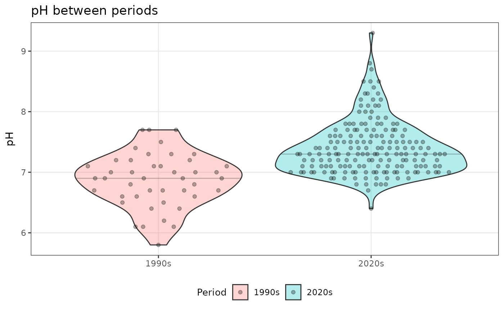

Exploring Changes in Water Quality in Yarra River
yarraView.RmdIntroduction
The Yarra River is one of Victoria’s most iconic waterways, flowing through Melbourne and supporting diverse ecosystems and communities. Understanding changes in water quality over time is crucial for environmental management and conservation efforts.
The yarraView package provides tools to explore and
visualize water quality data from the Yarra River, including
measurements of temperature, turbidity, salinity, and pH levels spanning
from the 1990s to the 2020s.
Getting Started
First, load the package:
# Load yarraView package
library(yarraView)
# Load other packages for data exploration
library(dplyr)
#>
#> Attaching package: 'dplyr'
#> The following objects are masked from 'package:stats':
#>
#> filter, lag
#> The following objects are masked from 'package:base':
#>
#> intersect, setdiff, setequal, union
library(ggplot2)
library(knitr)Interactive Dashboard
The easiest way to explore the water quality data is through the interactive Shiny dashboard. Launch it with:
Here is how the dashboard looks like:

The dashboard provides two main views:
Time Series Tab
The Time Series tab allows you to:
- Filter by year: Examine specific years (2020-2025) or view all years combined
- Select parameters: Choose from Water Temperature, Turbidity, Salinity, or pH
- Interactive visualization: Hover over data points to see exact measurements
- Summary statistics: View average values and record counts at a glance
This tab is ideal for identifying trends within the 2020s period and understanding seasonal patterns in water quality parameters.
Comparison Tab
The Comparison tab enables you to:
- Compare decades: Visualize differences between 1990s and 2020s measurements
- Identify long-term changes: See how water quality has evolved over 30 years
- Seasonal patterns: Examine monthly variations across different time periods
- Statistical summaries: Hover over the data points to see median values for each month and period
This tab helps answer questions like: “Has water temperature increased over the past three decades?” or “Are there differences in turbidity levels between the 1990s and 2020s?”
Accessing the Underlying Data
The dashboard is built on the yarra_water dataset, which
you can access directly for custom analysis:
data(yarra_water)Data Structure
Let’s explore the structure of the dataset:
glimpse(yarra_water)
#> Rows: 1,501
#> Columns: 13
#> $ site_id <fct> 229143, 229143, 229143, 229143, 229143, 229143, 22…
#> $ name <fct> YARRA @ CHANDLER HWY, YARRA @ CHANDLER HWY, YARRA …
#> $ datetime <dttm> 2020-04-02 08:55:00, 2020-06-05 12:20:00, 2020-08…
#> $ data_type <fct> Quality, Quality, Quality, Quality, Quality, Quali…
#> $ parameter <fct> Total Arsenic, Total Arsenic, Total Arsenic, Total…
#> $ value <dbl> 0.001, 0.001, 0.003, 0.001, 0.001, 0.001, 0.001, 0…
#> $ unit_of_measurement <chr> "mg/L", "mg/L", "mg/L", "mg/L", "mg/L", "mg/L", "m…
#> $ year <dbl> 2020, 2020, 2020, 2020, 2020, 2020, 2020, 2020, 20…
#> $ month <dbl> 4, 6, 8, 9, 9, 9, 9, 9, 9, 9, 9, 10, 12, 2, 4, 6, …
#> $ weekday <ord> Thu, Fri, Mon, Wed, Thu, Fri, Sat, Sun, Mon, Tue, …
#> $ period <fct> 2020s, 2020s, 2020s, 2020s, 2020s, 2020s, 2020s, 2…
#> $ season <fct> Autumn, Winter, Winter, Spring, Spring, Spring, Sp…
#> $ parameter_type <fct> Toxicant, Toxicant, Toxicant, Toxicant, Toxicant, …The dataset contains 1501 observations with the following key variables:
-
site_id: Unique identifier for monitoring sites -
name: Location name of the monitoring site -
datetime: Date and time of measurement -
parameter: Water quality parameter measured -
value: Measured value -
unit_of_measurement: Unit of the measurement -
year,month,weekday: Temporal components -
period: Decade classification (1990s or 2020s) -
season: Season when measurement was taken -
parameter_type: Category of the parameter
Available Parameters
yarra_water |>
distinct(parameter, unit_of_measurement, parameter_type) |>
arrange(parameter)
#> # A tibble: 19 × 3
#> parameter unit_of_measurement parameter_type
#> <fct> <chr> <fct>
#> 1 Total Arsenic mg/L Toxicant
#> 2 Total Chromium mg/L Toxicant
#> 3 Total Copper mg/L Toxicant
#> 4 Total Nickel mg/L Toxicant
#> 5 Total Suspended Solids (TSS) mg/L Toxicant
#> 6 Total Zinc mg/L Toxicant
#> 7 Nitrogen as Nitrate (NO2) mg/L Nutrient
#> 8 Nitrogen as Nitrite (NO3) mg/L Nutrient
#> 9 Nitrogen as NOx mg/L Nutrient
#> 10 Nitrogen as Total mg/L Nutrient
#> 11 Nitrogen as Total Kjeldahl (TKN) mg/L Nutrient
#> 12 Phosphorus (Total) mg/L Nutrient
#> 13 Phosphorus as FRP mg/L Nutrient
#> 14 Colour (True Filtered) (PCU) Pt-Co Physical/Chemical Stres…
#> 15 Dissolved Oxygen (DO) (field) ppm Physical/Chemical Stres…
#> 16 pH pH Physical/Chemical Stres…
#> 17 Salinity as EC@25 µS/cm Physical/Chemical Stres…
#> 18 Turbidity NTU Physical/Chemical Stres…
#> 19 Water Temperature ∞C Physical/Chemical Stres…Example Analysis
1. Summary Statistics
Calculate summary statistics for each parameter:
yarra_water |>
filter(period == "2020s") |>
group_by(parameter, unit_of_measurement) |>
summarise(
n = n(),
min = min(value, na.rm = TRUE),
median = median(value, na.rm = TRUE),
mean = mean(value, na.rm = TRUE),
max = max(value, na.rm = TRUE),
.groups = "drop"
) |>
knitr::kable(digits = 2, caption = "Water Quality Parameter Summary (2020s)")| parameter | unit_of_measurement | n | min | median | mean | max |
|---|---|---|---|---|---|---|
| Total Arsenic | mg/L | 53 | 0.00 | 0.00 | 0.00 | 0.00 |
| Total Chromium | mg/L | 53 | 0.00 | 0.00 | 0.00 | 0.02 |
| Total Copper | mg/L | 53 | 0.00 | 0.00 | 0.00 | 0.01 |
| Total Nickel | mg/L | 53 | 0.00 | 0.00 | 0.00 | 0.01 |
| Total Zinc | mg/L | 53 | 0.00 | 0.01 | 0.02 | 0.09 |
| Nitrogen as Nitrate (NO2) | mg/L | 2 | 0.39 | 0.45 | 0.45 | 0.51 |
| Nitrogen as Nitrite (NO3) | mg/L | 53 | 0.00 | 0.00 | 0.01 | 0.01 |
| Nitrogen as Total | mg/L | 53 | 0.49 | 0.98 | 1.05 | 3.00 |
| Nitrogen as Total Kjeldahl (TKN) | mg/L | 2 | 0.72 | 0.96 | 0.96 | 1.20 |
| Phosphorus (Total) | mg/L | 2 | 0.13 | 0.14 | 0.14 | 0.15 |
| pH | pH | 179 | 6.40 | 7.30 | 7.40 | 9.30 |
| Salinity as EC@25 | µS/cm | 179 | 84.00 | 180.00 | 193.46 | 1300.00 |
| Turbidity | NTU | 175 | 7.00 | 23.00 | 38.27 | 340.00 |
| Water Temperature | ∞C | 179 | 7.30 | 20.00 | 17.96 | 26.00 |
2. Comparing Decades
Compare median pH level between the 1990s and 2020s:
yarra_water |>
filter(
parameter == "pH",
value != 0) |>
ggplot(aes(x = period, y = value, fill = period)) +
geom_violin(draw_quantiles = 0.5, alpha = 0.3) +
ggbeeswarm::geom_quasirandom(alpha = 0.3) +
labs(
x = NULL,
y = "pH",
title = "pH between periods",
fill = "Period", colour = "Period"
) +
theme_bw() +
theme(
legend.position = "bottom",
legend.title = element_text(size = 10),
panel.grid.minor = element_blank(),
strip.text = element_text(face = "bold"),
axis.text.x = element_text(angle = 0, vjust = 1),
axis.title.y = element_text(margin = margin(r = 6))
)
#> Warning: The `draw_quantiles` argument of `geom_violin()` is deprecated as of ggplot2
#> 4.0.0.
#> ℹ Please use the `quantiles.linetype` argument instead.
#> This warning is displayed once every 8 hours.
#> Call `lifecycle::last_lifecycle_warnings()` to see where this warning was
#> generated.
#> Ignoring unknown labels:
#> • colour : "Period"
Conclusion
The yarraView package provides accessible tools for
exploring Yarra River water quality data. Whether using the interactive
dashboard for quick exploration or accessing the underlying data for
detailed analysis, users can gain insights into how water quality has
changed over time and identify patterns that inform environmental
management decisions.
Further Resources
- For more information about water quality parameters, see the parameter information boxes in the dashboard
- To contribute to the package or report issues, visit the package repository
- For questions about the data source or methodology, refer to the
dataset documentation:
?yarra_water